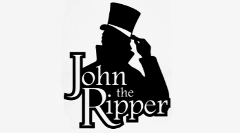

Welcome to John The Ripper Lecture Review!

In this lecture we will cover the topics discussed in Lecture 2. The focal point of lecture 2 was John The Ripper.
Now let's get stuck in!
What is John The Ripper?
John the Ripper is a free password cracking software tool. Initially developed for the Unix operating system, it now runs on fifteen different platforms
(eleven of which are architecture-specific versions of Unix, DOS, Win32, BeOS, and OpenVMS). It is one of the most popular password testing and
breaking programs as it combines a number of password crackers into one package, autodetects password hash types, and includes a customizable cracker.